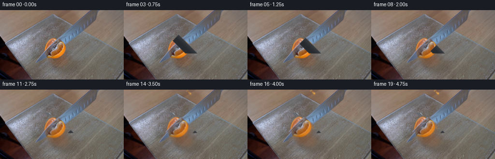
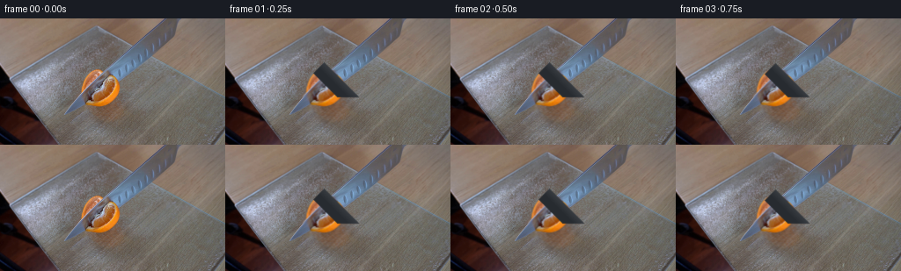

CODING AGENTS AS PIXEL WORLD MODELS
traex/DeepSeek-V4.1-Flash · 0042
点击播放 · 原生 RGB 像素
逐轮保存的候选
回放视频、检查图与代码变化。
每份候选均可单独播放。实际图片检查记录在下方工具轨迹中。
候选 01播放与检查图
点击播放 · 原生 RGB 像素


展开代码变化
--- 上一保存版本 +++ 本次保存版本 @@ -0,0 +1,200 @@ +from pathlib import Path + +import cv2 +import numpy as np + +import artifact_io + + +ROOT = Path(__file__).resolve().parent +N_FRAMES = 20 + + +def smoothstep(x): + x = np.clip(x, 0.0, 1.0) + return x * x * (3.0 - 2.0 * x) + + +def polygon_mask(shape, points, blur=0.0): + mask = np.zeros(shape, np.uint8) + cv2.fillPoly(mask, [np.rint(points).astype(np.int32)], 255) + if blur: + mask = cv2.GaussianBlur(mask, (0, 0), blur) + return mask.astype(np.float32) / 255.0 + + +def shifted_region(source, mask, dx, dy): + matrix = np.float32([[1, 0, dx], [0, 1, dy]]) + image = cv2.warpAffine( + source, matrix, (source.shape[1], source.shape[0]), + flags=cv2.INTER_LINEAR, borderMode=cv2.BORDER_REFLECT_101, + ) + region = cv2.warpAffine( + mask, matrix, (source.shape[1], source.shape[0]), + flags=cv2.INTER_LINEAR, borderMode=cv2.BORDER_CONSTANT, borderValue=0, + ) + return image, region + + +def composite(base, image, alpha): + a = alpha[..., None] + return base * (1.0 - a) + image * a + + +def make_background(frame): + """Extend the table/board texture under the small movable objects.""" + result = frame.copy() + # The two fruit lobes and the knife tip are isolated in the central crop. + source = cv2.GaussianBlur(frame, (0, 0), 5.0) + patch = cv2.resize(source[78:124, 96:148], (58, 52), interpolation=cv2.INTER_LINEAR) + target = result[74:126, 91:149] + yy, xx = np.mgrid[0:52, 0:58] + alpha = np.clip(np.minimum.reduce([ + yy / 7.0, (51 - yy) / 8.0, xx / 7.0, (57 - xx) / 8.0 + ]), 0.0, 1.0)[..., None] + target[:] = target * (1.0 - 0.62 * alpha) + patch * (0.62 * alpha) + return result + + +def knife_layers(frame, fruit_mask, t): + """Cutting blade aligned with the diagonal present in the source frame.""" + yy, xx = np.mgrid[0:frame.shape[0], 0:frame.shape[1]] + # Blade centerline: x - y = 50, moving down-left through the orange half. + along = (xx + yy - 128.0) / np.sqrt(2.0) + normal = (xx - yy - 50.0) / np.sqrt(2.0) + lead = 1.0 - smoothstep((along - t) / 2.2) + blade = (np.abs(normal) < 4.2) & (along <= t + 2.0) + blade &= (yy > 47) & (yy < 119) + blade_alpha = blade.astype(np.float32) + # Slightly softer edges hide the pixel stair-step at 256x144. + blade_alpha = cv2.GaussianBlur(blade_alpha, (0, 0), 0.55) + + # Blade has a bright upper bevel and a darker lower body. + edge = np.clip((normal + 4.2) / 2.0, 0.0, 1.0) + body = np.clip((-normal - 0.5) / 3.2, 0.0, 1.0) + shine = np.clip(1.0 - np.abs(normal - 2.3) / 1.5, 0.0, 1.0) + steel = np.empty_like(frame) + steel[:] = np.array([126.0, 131.0, 136.0]) + steel = steel * (0.76 + 0.12 * body[..., None]) + steel += (np.array([64.0, 72.0, 76.0]) * shine[..., None]) + steel -= (np.array([31.0, 25.0, 18.0]) * (1.0 - edge[..., None])) + + # Dark handle extends out of frame toward upper right. + handle = (along > t + 55.0) & (np.abs(normal) < 8.5) & (yy > 8) & (yy < 90) + handle_alpha = cv2.GaussianBlur(handle.astype(np.float32), (0, 0), 0.55) + handle_rgb = np.empty_like(frame) + handle_rgb[:] = np.array([39.0, 43.0, 48.0]) + handle_rgb += (np.clip(normal / 8.5, 0.0, 1.0) * 16.0)[..., None] + + # The blade occludes fruit and board in the cut path. + image = composite(frame, steel.astype(np.float32), blade_alpha) + image = composite(image, handle_rgb, handle_alpha) + + # A thin, warm contact shadow immediately below the cutting edge. + shadow = np.exp(-((normal - 5.0) / 1.8) ** 2) * lead + shadow *= ((yy > 62) & (yy < 111)).astype(np.float32) + shadow *= np.clip(1.0 - fruit_mask * 0.25, 0.0, 1.0) + image *= (1.0 - 0.20 * shadow[..., None]) + return image, blade_alpha + + +def render(frame, index): + # Frame 0 is deliberately returned unchanged. + if index == 0: + return frame.copy() + + image = frame.astype(np.float32) + yy, xx = np.mgrid[0:image.shape[0], 0:image.shape[1]] + + # The visible tangerine half is the saturated orange region around (121, 91). + hsv = cv2.cvtColor(frame, cv2.COLOR_RGB2HSV) + H, S, V = hsv[..., 0], hsv[..., 1], hsv[..., 2] + R, G, B = image[..., 0], image[..., 1], image[..., 2] + orange = ( + (H < 30) & (S > 45) & (V > 52) & + (R > G * 1.08) & (G > B * 1.02) + ) + orange &= (xx >= 88) & (xx <= 147) & (yy >= 55) & (yy <= 123) + orange = cv2.morphologyEx(orange.astype(np.uint8), cv2.MORPH_CLOSE, np.ones((3, 3), np.uint8)) + orange = cv2.dilate(orange, np.ones((2, 2), np.uint8), iterations=1) + orange = cv2.GaussianBlur(orange.astype(np.float32), (0, 0), 0.75) + + # Keep a little space around the fruit so the cut seam has a natural rim. + fruit = cv2.GaussianBlur((orange > 0.20).astype(np.float32), (0, 0), 1.1) + fruit = np.maximum(fruit, polygon_mask( + orange.shape, [[94, 80], [101, 68], [117, 58], [129, 62], [137, 80], + [139, 101], [130, 115], [111, 119], [97, 105]], blur=1.0 + ) * 0.65) + + # A short anticipation, a steady cut, and a settled final pose. + u = smoothstep((index - 2) / 10.0) + t = -31.0 + 49.0 * u + if index >= 17: + t = 18.0 + split = smoothstep((index - 10) / 7.0) + opening = 0.8 + 5.2 * split + + # Expose board under the object only after the blade has reached it. + cover = cv2.GaussianBlur(fruit, (0, 0), 1.0) + cover *= smoothstep((index - 4) / 5.0) + board = make_background(frame) + image = composite(image, board, cover * 0.58) + + # Separate the two portions along the same diagonal as the cut. + upper = polygon_mask( + fruit.shape, [[82, 40], [161, 40], [161, 76], [139, 102], [119, 123], [82, 123]], + blur=1.1, + ) * (fruit > 0.28) + lower = fruit * (1.0 - upper) + upper = cv2.GaussianBlur(upper, (0, 0), 0.65) + lower = cv2.GaussianBlur(lower, (0, 0), 0.65) + + # Motion perpendicular to the cut, with a slight upward relaxation. + up_image, up_alpha = shifted_region(image, upper, -opening * 0.62, -opening * 0.32) + lo_image, lo_alpha = shifted_region(image, lower, opening * 0.20, opening * 0.18) + image = composite(image, lo_image, lo_alpha * 0.88) + image = composite(image, up_image, up_alpha * 0.94) + + # The fresh cut face: pale pith, juicy flesh, and a darker outer peel line. + along = (xx + yy - 128.0) / np.sqrt(2.0) + normal = (xx - yy - 50.0) / np.sqrt(2.0) + seam = np.exp(-((normal - opening * 0.23) / (1.25 + 0.55 * split)) ** 2) + seam *= np.clip((along + 23.0) / 8.0, 0.0, 1.0) + seam *= np.clip((25.0 - along) / 7.0, 0.0, 1.0) + seam *= fruit + seam *= smoothstep((index - 8) / 5.0) + pith = np.empty_like(image) + pith[:] = np.array([231.0, 187.0, 132.0]) + image = composite(image, pith, seam * 0.74) + + # Fine droplets and exposed pulp along the seam, deterministic and subtle. + rng = np.random.default_rng(42) + for _ in range(30): + a = rng.uniform(-20.0, 22.0) + n = rng.uniform(-1.8, 1.8) + opening * 0.23 + x = 128.0 + (a + n) / np.sqrt(2.0) + y = (a - n) / np.sqrt(2.0) + if 0 <= x < 256 and 0 <= y < 144: + mask = np.exp(-((xx - x) ** 2 + (yy - y) ** 2) / (0.85 + 1.6 * rng.random())) + color = np.array([252.0, 188.0, 76.0]) if rng.random() > 0.35 else np.array([181.0, 104.0, 38.0]) + image = composite(image, np.broadcast_to(color, image.shape), mask * 0.42 * split) + + # Move the knife through the cut, then hold the final composition. + image, blade = knife_layers(image, fruit, t) + + # Fixed camera/lens: a very slight luminance settling, no frame shake. + gain = 1.0 + 0.008 * smoothstep(index / 19.0) + image *= gain + image += np.array([0.7, 0.2, -0.5]) * smoothstep((index - 1) / 15.0) + return np.clip(np.rint(image), 0, 255).astype(np.uint8) + + +def main(): + first = np.asarray(cv2.cvtColor(cv2.imread(str(ROOT / "first_frame.png")), cv2.COLOR_BGR2RGB)) + frames = np.stack([render(first, i) for i in range(N_FRAMES)]) + frames[0] = first + artifact_io.save(frames, ROOT) + + +if __name__ == "__main__": + main()
可观测工具轨迹
实际执行的命令与返回图片。
命令 1exit 0
/bin/bash -c "pwd && rg --files -g '"'!*.mp4'"' -g '"'!*.webm'"'"
命令 2exit 0
/bin/bash -c "sed -n '1,240p' prompt.txt"
命令 3exit 0
/bin/bash -c "sed -n '1,280p' GENERATION_RULES.md"
命令 4exit 0
/bin/bash -c 'file first_frame.png && identify first_frame.png 2>/dev/null || true && git status --short'
命令 5exit 0
/bin/bash -c "sed -n '1,260p' artifact_io.py"
命令 6exit 0
/bin/bash -c "sed -n '1,260p' player_template.html"
命令 7exit 0
/bin/bash -c "python - <<'PY'
from PIL import Image
im=Image.open('first_frame.png')
print(im.mode, im.size)
print(im.getpixel((0,0)), im.getpixel((128,72)), im.getpixel((255,143)))
PY"命令 8exit 0
/bin/bash -c "python - <<'PY'
from PIL import Image
import numpy as np
im=np.array(Image.open('first_frame.png').convert('RGB'))
# quantize 3 bits/channel and count dominant bins
q=(im//32)*32
colors,counts=np.unique(q.reshape(-1,3),axis=0,return_counts=True)
for c,n in sorted(zip(colors.tolist(),counts.tolist()), key=lambda x:-x[1])[:30]:
print(f'{n:6d} {n/im.shape[0]/im.shape[1]*100:5.1f}% rgb{tuple(c)}')
PY"命令 9exit 0
/bin/bash -c "python - <<'PY'
from PIL import Image
import numpy as np
im=np.array(Image.open('first_frame.png').convert('RGB')).astype(float)
# print coarse 16x9 block average hex, useful as text-based view
for yy in range(0,144,16):
row=[]
for xx in range(0,256,16):
c=im[yy:yy+16,xx:xx+16].mean((0,1)).round().astype(int)
row.append('%02x%02x%02x'%tuple(c))
print(' '.join(row))
PY"命令 10exit 0
/bin/bash -c "python - <<'PY'
import cv2, numpy as np
im=cv2.imread('first_frame.png')
lab=cv2.cvtColor(im, cv2.COLOR_BGR2LAB).astype(np.float32)
Z=lab.reshape(-1,3)
crit=(cv2.TERM_CRITERIA_EPS+cv2.TERM_CRITERIA_MAX_ITER,100,.2)
K=16
_, labels, cen=cv2.kmeans(Z,K,None,crit,10,cv2.KMEANS_PP_CENTERS)
labels=labels.reshape(im.shape[:2])
# sort by population
for i in np.argsort(np.bincount(labels.ravel()))[::-1]:
bgr=cen[i][::-1] if False else cv2.cvtColor(np.uint8([[cen[i]]]),cv2.COLOR_LAB2BGR)[0,0]
n=(labels==i).sum()
ys,xs=np.where(labels==i)
print(f'{i:2d} n={n:5d} bbox=({xs.min():3d},{ys.min():3d})-({xs.max():3d},{ys.max():3d}) RGB={tuple(bgr[::-1])}')
# map top 12 clusters to chars sorted by hue/rough color
chars='0123456789ABCDEF'
print('\\ncluster map:')
for y in range(0,144,4):
print(''.join(chars[labels[min(y+2,143),min(x+2,255)]] for x in range(0,256,4)))
PY"命令 11exit 0
/bin/bash -c "python - <<'PY'
import cv2, numpy as np
im=cv2.imread('first_frame.png')[:,:,::-1]
hsv=cv2.cvtColor(im, cv2.COLOR_RGB2HSV)
# char classes
# orange hue 5-30 sat>80
R,G,B=im[:,:,0],im[:,:,1],im[:,:,2]
H,S,V=hsv[:,:,0],hsv[:,:,1],hsv[:,:,2]
orange=(H>=3)&(H<=30)&(S>70)&(R>110)
brightorange=(orange)&(R>180)&(G>80)
metal=(S<45)&(V>120)
dark=(V<75)
bluegray=(B>R+12)&(V>70)
# categories chars: orange o/O, metal m, dark #, bluegray b, else . use brightness
for y in range(24,124,2):
s=''
for x in range(56,184,2):
block_o=orange[y:y+2,x:x+2].mean() if False else None
# classify each 2x2 center average
r,g,b=im[y,x]; h,sa,v=hsv[y,x]
if orange[y,x]: c='O' if brightorange[y,x] else 'o'
elif dark[y,x]: c='#'
elif metal[y,x]: c='m'
elif bluegray[y,x]: c='b'
else: c='.' if v>150 else ':'
s+=c
print(f'{y:3d} {s}')
PY"命令 12exit 0
/bin/bash -c "python - <<'PY'
from PIL import Image
import numpy as np
im=np.array(Image.open('first_frame.png').convert('RGB'))
# crops encoded as unicode half blocks, luminance mapped. left focus 70:150, right 140:230
def lum(c): return int(.2126*c[0]+.7152*c[1]+.0722*c[2])
for x0,x1,y0,y1 in [(72,150,48,112),(145,230,48,120),(0,256,0,144)]:
print('\\nCROP',x0,x1,y0,y1)
chars=' .,:;irsXA253hMHGS#9B&@'
for y in range(y0,y1,2):
s=''
for x in range(x0,x1):
a=im[y,x].astype(float); b=im[min(y+1,143),x].astype(float)
# use max channel or luminance; colored edge pop
v=lum(a+b)/2
i=max(0,min(len(chars)-1,int(v/256*len(chars))))
s+=chars[i]
print(s)
PY"命令 13exit 0
/bin/bash -c "command -v chafa || true; command -v viu || true; command -v jp2 || true; command -v img2txt || true; command -v ffmpeg || true; python - <<'PY'
import cv2
print('cv2',cv2.__version__)
PY"命令 14exit 0
/bin/bash -c "python - <<'PY'
import cv2, numpy as np
im=cv2.imread('first_frame.png')
g=cv2.cvtColor(im,cv2.COLOR_BGR2GRAY)
for t1,t2 in [(30,80),(50,120),(80,160),(110,220)]:
e=cv2.Canny(g,t1,t2)
print('\\nCanny',t1,t2,'n',e.sum()//255)
lines=cv2.HoughLinesP(e,1,np.pi/180,threshold=18,minLineLength=15,maxLineGap=4)
if lines is not None:
ll=[]
for l in lines[:,0]:
x1,y1,x2,y2=map(int,l); length=((x2-x1)**2+(y2-y1)**2)**.5
angle=np.degrees(np.arctan2(y2-y1,x2-x1))
ll.append((length,angle,(x1,y1,x2,y2)))
for length,ang,l in sorted(ll,reverse=True)[:30]: print(f'L={length:5.1f} a={ang:6.1f} {l}')
PY"命令 15exit 0
/bin/bash -c "python - <<'PY'
import cv2,numpy as np
im=cv2.imread('first_frame.png')
rgb=im[:,:,::-1]
hsv=cv2.cvtColor(im,cv2.COLOR_BGR2HSV)
H,S,V=hsv[:,:,0],hsv[:,:,1],hsv[:,:,2]
for name,m in [
('orange1',(H>=2)&(H<=25)&(S>=70)&(V>=80)),
('orange2',(H>=3)&(H<=28)&(S>=90)&(V>=100)),
('orange3',(H>=0)&(H<=30)&(S>=60)&(rgb[:,:,0]>rgb[:,:,1]*1.25)&(rgb[:,:,0]>rgb[:,:,2]*1.35)),
('dark',V<80),
('metal',(S<40)&(V>120)),
]:
n,lab,stats,cents=cv2.connectedComponentsWithStats(m.astype('uint8'),8)
print('\\n',name,m.sum())
for i in np.argsort(stats[1:,4])[::-1][:12]+1:
x,y,w,h,a=stats[i]
if a>=10: print(i,'area',a,'bbox',x,y,w,h,'cent',np.round(cents[i],1))
PY"命令 16exit 0
/bin/bash -c "python - <<'PY'
import cv2,numpy as np
im=cv2.imread('first_frame.png')
rgb=im[:,:,::-1].astype(np.float32)
# Sample representative colors at orange and immediate surroundings
for y in [58,60,64,68,72,76,80,84,88,92,96,100,104,108,112,116]:
print(y, [tuple(rgb[y,x].astype(int)) for x in [92,96,100,104,108,112,116,120,124,128,132,136,140,144,148]])
PY"命令 17exit 0
/bin/bash -c "python - <<'PY'
import cv2, numpy as np
im=cv2.imread('first_frame.png')[:,:,::-1]
hsv=cv2.cvtColor(im[:,:,::-1],cv2.COLOR_BGR2HSV)
R,G,B=[im[:,:,i].astype(int) for i in range(3)]; H,S,V=[hsv[:,:,i] for i in range(3)]
orange=(R>G*1.15)&(G>B*1.05)&(R>110)&(S>55)&(H<35)
brightorange=orange&(R>200)&(G>100)
flesh=(R>175)&(G>125)&(B>75)&(S<100)&(H<35)
metal=(S<50)&(V>115)
dark=V<70
# map
for y in range(48,116):
s=''
for x in range(78,154):
if brightorange[y,x]: c='@'
elif orange[y,x]: c='o'
elif flesh[y,x]: c='f'
elif dark[y,x]: c='#'
elif metal[y,x]: c='m'
elif V[y,x]>150: c='+'
elif V[y,x]>110: c='.'
else: c=','
s+=c
print(f'{y:3d} {s}')
PY"命令 18exit 0
/bin/bash -c "python - <<'PY'
import cv2,numpy as np
im=cv2.imread('first_frame.png')[:,:,::-1]
hsv=cv2.cvtColor(im[:,:,::-1],cv2.COLOR_BGR2HSV)
R,G,B=im[:,:,0],im[:,:,1],im[:,:,2];H,S,V=hsv[:,:,0],hsv[:,:,1],hsv[:,:,2]
m=(R>G*1.15)&(G>B*1.05)&(R>105)&(S>50)&(H<35)
print('orange extents per row')
for y in range(52,121):
xs=np.flatnonzero(m[y,80:165])+80
if len(xs):
# runs
runs=[]; a=xs[0]; p=xs[0]
for x in xs[1:]:
if x>p+1: runs.append((a,p)); a=x
p=x
runs.append((a,p))
print(y, runs)
PY"命令 19exit 0
/bin/bash -c "python - <<'PY'
import cv2,numpy as np
im=cv2.imread('first_frame.png')
g=cv2.cvtColor(im,cv2.COLOR_BGR2GRAY)
# emphasize diagonal line filters
for name,k in [('diag_down',np.array([[-2,-1,0],[-1,2,1],[0,1,2]])),('diag_up',np.array([[0,-1,-2],[1,2,1],[2,1,0]]))]:
r=cv2.filter2D(g.astype(float),-1,k)
# top points in central bbox
a=np.abs(r[40:125,70:190])
idx=np.dstack(np.unravel_index(np.argsort(a.ravel())[-30:],a.shape))[0]
print(name)
for yy,xx in idx[::-1][:20]: print((int(xx+70),int(yy+40)),round(r[yy+40,xx+70],1))
PY"命令 20exit 0
/bin/bash -c "python - <<'PY'
import cv2,numpy as np
im=cv2.imread('first_frame.png')
rgb=im[:,:,::-1]
# edge map around object
g=cv2.cvtColor(im,cv2.COLOR_BGR2GRAY)
e=cv2.Canny(g,40,100)
# ascii central 72..180,48..126 with edge #
for y in range(48,126,2):
s=''
for x in range(72,180,1):
# max edge in 2x1
v=e[y:y+2,x].max()
r,gc,b=rgb[y,x]
if v: c='#'
elif r>gc*1.15 and gc>b*1.05 and r>105 and max(r,gc,b)-min(r,gc,b)>30: c='o'
elif r>175 and gc>125 and b>75: c='f'
elif max(r,gc,b)>165: c='+'
elif max(r,gc,b)>120: c='.'
elif max(r,gc,b)>80: c=','
else: c=' '
s+=c
print(f'{y:3d} {s}')
PY"命令 21exit 0
/bin/bash -c "python - <<'PY'
import cv2,numpy as np
im=cv2.imread('first_frame.png')
rgb=im[:,:,::-1]
# estimate broad background using heavy blur, then object difference in central ROI
bg=cv2.GaussianBlur(im,(0,0),12)
d=np.linalg.norm(im.astype(float)-bg.astype(float),axis=2)
hsv=cv2.cvtColor(im,cv2.COLOR_BGR2HSV)
R,G,B=rgb[:,:,0].astype(float),rgb[:,:,1].astype(float),rgb[:,:,2].astype(float)
H,S,V=hsv[:,:,0].astype(float),hsv[:,:,1].astype(float),hsv[:,:,2].astype(float)
# orange mask via a* maybe LAB
lab=cv2.cvtColor(im,cv2.COLOR_BGR2LAB)
a=lab[:,:,1].astype(float)-128; b=lab[:,:,2].astype(float)-128
m=(a>10)&(b>10)&(d>20)
# close/grow and component stats
mm=(m*255).astype('uint8')
mm=cv2.morphologyEx(mm,cv2.MORPH_CLOSE,np.ones((5,5),np.uint8))
mm=cv2.dilate(mm,np.ones((3,3),np.uint8),iterations=1)
n,labels,stats,cents=cv2.connectedComponentsWithStats(mm)
for i in np.argsort(stats[1:,4])[::-1][:20]+1:
x,y,w,h,A=stats[i]
if A>20: print(i,A,(x,y,w,h),np.round(cents[i],1))
cv2.imwrite('.tmp/mask.png',mm)
# polygon approximate on largest object ROI by active extents
PY"命令 22exit 0
/bin/bash -c "python - <<'PY'
import cv2,numpy as np
im=cv2.imread('first_frame.png')[:,:,::-1]
hsv=cv2.cvtColor(im[:,:,::-1],cv2.COLOR_BGR2HSV)
# categories
for y in range(40,128,2):
s=''
for x in range(76,180,2):
c=im[y:y+2,x:x+2].mean((0,1))
h,sa,v=cv2.cvtColor(np.uint8([[c]]),cv2.COLOR_RGB2HSV)[0,0]
r,g,b=c
if v<45: ch='@'
elif v<75: ch='#'
elif sa<20: ch=' ' if v<115 else ('.' if v<155 else '+')
elif sa<50:
if h<12 or h>170: ch='r'
elif h<35: ch='t'
elif h<75: ch='y'
elif h<105: ch='g'
elif h<135: ch='c'
elif h<160: ch='B'
else: ch='m'
elif sa<100: ch='o'
else: ch='O'
s+=ch
print(f'{y:3d} {s}')
PY"命令 23exit 0
/bin/bash -c "python - <<'PY'
from PIL import Image
import numpy as np
im=np.array(Image.open('first_frame.png').convert('RGB'))
# show color around presumed object, 4x4 downsample via 1 pixel? sample every 2 with hue tokens
# custom classify vividness and hue; region x=82..146 y=54..124
for y in range(54,124,2):
s=''
for x in range(82,146,2):
c=im[y,x].astype(float); mx=c.max(); mn=c.min(); v=mx; sat=0 if mx==0 else (mx-mn)/mx
r,g,b=c
if sat<.12: ch=' '
elif r>g*1.15 and g>b*1.05: ch='@' if r>200 else 'o'
elif b>r*1.05 and b>g*.98: ch='b' if v>90 else 'B'
elif r>180 and g>130: ch='f'
elif r>g*1.08: ch='r'
elif g>=r*1.03 and g>b*1.03: ch='g'
else: ch='.'
s+=ch
print(f'{y:3d} {s}')
PY"命令 24exit 0
/bin/bash -c "python - <<'PY'
import cv2,numpy as np
im=cv2.imread('first_frame.png')
g=cv2.cvtColor(im,cv2.COLOR_BGR2GRAY)
e=cv2.Canny(g,80,160)
# look at lines x=90..150 y=55..110. Print Hough lines lower thresholds
lines=cv2.HoughLinesP(e[50:115,85:155],1,np.pi/360,threshold=8,minLineLength=10,maxLineGap=2)
for l in sorted(lines[:,0],key=lambda q:-((q[2]-q[0])**2+(q[3]-q[1])**2))[:80]:
x1,y1,x2,y2=map(int,l);x1+=85;x2+=85;y1+=50;y2+=50
print((x1,y1,x2,y2), 'angle',round(np.degrees(np.arctan2(y2-y1,x2-x1)),1))
PY"命令 25exit 0
/bin/bash -c "python - <<'PY'
import cv2,numpy as np
im=cv2.imread('first_frame.png')[:,:,::-1].astype(float)
# HSV local print around suspected object x85..145 y55..120, 4x4 block average
for y in range(54,122,3):
s=''
for x in range(84,146,3):
c=im[y:y+3,x:x+3].mean((0,1)).astype(np.uint8)
h,sat,v=cv2.cvtColor(c.reshape(1,1,3),cv2.COLOR_RGB2HSV)[0,0]
# colored char by hue
if sat<25: ch=' '
elif sat<70:
if h<10 or h>170: ch='r'
elif h<35: ch='t'
elif h<85: ch='y'
elif h<135: ch='g'
elif h<160: ch='b'
else: ch='p'
else:
if h<8 or h>172: ch='R'
elif h<28: ch='O'
elif h<45: ch='Y'
elif h<90: ch='G'
elif h<135: ch='B'
elif h<160: ch='C'
else: ch='P'
s+=ch
print(f'{y:3d} {s}')
PY"命令 26exit 0
/bin/bash -c "python - <<'PY'
import cv2,numpy as np
im=cv2.imread('first_frame.png')[:,:,::-1].astype(int)
# line P + t*(.707,-.707); perpendicular (.707,.707)
P=np.array([129.,78.]); d=np.array([1.,-1.])/np.sqrt(2); n=np.array([1.,1.])/np.sqrt(2)
for t in [-20,0,20,40,60]:
print('\\nt',t)
for u in range(-18,19,2):
p=P+t*d+u*n; x,y=np.rint(p).astype(int)
if 0<=x<256 and 0<=y<144:
c=im[y,x]; print(f'u={u:3d} xy={x:3d},{y:3d} rgb={tuple(c)}')
PY"命令 27exit 0
/bin/bash -c "python - <<'PY'
import cv2,numpy as np
im=cv2.imread('first_frame.png')[:,:,::-1]
# create enlarged crop saved only, but also print RGB averages by row for selected intervals
for y in range(56,122,2):
vals=[]
for x0,x1 in [(92,103),(104,116),(118,129),(130,138),(140,150)]:
c=im[y:y+2,x0:x1].mean((0,1)).round().astype(int)
vals.append('%02x%02x%02x'%tuple(c))
print(y,' '.join(vals))
PY"命令 28exit 0
/bin/bash -c "python - <<'PY'
import cv2,numpy as np
im=cv2.imread('first_frame.png')
rgb=im[:,:,::-1]
# draw grid indices by downscaled nearest no tool; list image dimensions and RGB of key central points
# edge detection then lines from crop around object; test contour shape with thresholded orange.
lab=cv2.cvtColor(im,cv2.COLOR_BGR2LAB).astype(np.float32)
L,a,b=cv2.split(lab)
m=((a-128)>10)&((b-128)>10)&(L>50)
m=m.astype('uint8')*255
# remove objects outside central, keep object components near (120,90)
n,labimg,stats,cents=cv2.connectedComponentsWithStats(m)
keep=np.zeros_like(m)
for i in range(1,n):
x,y,w,h,A=stats[i]
if 80<x<150 and 50<y<130 and A>10:
keep[labimg==i]=255
# convex hull
cnts,_=cv2.findContours(keep,cv2.RETR_EXTERNAL,cv2.CHAIN_APPROX_SIMPLE)
for c in cnts:
if cv2.contourArea(c)>50:
hull=cv2.convexHull(c)
ap=cv2.approxPolyDP(hull,2,True)
print('contour',cv2.contourArea(c),'hull',cv2.contourArea(hull),'points',ap[:,0].tolist())
PY"命令 29exit 0
/bin/bash -c "python - <<'PY'
import cv2,numpy as np
im=cv2.imread('first_frame.png')
rgb=im[:,:,::-1]
# inspect high-saturation mask contour full image
hsv=cv2.cvtColor(im,cv2.COLOR_BGR2HSV)
S=hsv[:,:,1];V=hsv[:,:,2];H=hsv[:,:,0]
m=((S>70)&(V>75)&(H<30)).astype('uint8')*255
m=cv2.morphologyEx(m,cv2.MORPH_CLOSE,np.ones((3,3),np.uint8))
cnts,_=cv2.findContours(m,cv2.RETR_EXTERNAL,cv2.CHAIN_APPROX_SIMPLE)
for c in sorted(cnts,key=cv2.contourArea,reverse=True)[:10]:
x,y,w,h=cv2.boundingRect(c); a=cv2.contourArea(c)
print(a,(x,y,w,h),cv2.approxPolyDP(c,2,True)[:,0].tolist())
PY"命令 30exit 0
/bin/bash -c "python - <<'PY'
import cv2, numpy as np
im=cv2.imread('first_frame.png')[:,:,::-1]
hsv=cv2.cvtColor(im[:,:,::-1],cv2.COLOR_BGR2HSV)
# downsample 2x2 by median-ish center; categorical map
for y in range(0,144,2):
s=''
for x in range(0,256,2):
c=im[y:y+2,x:x+2].mean((0,1)).astype(np.uint8)
h,sa,v=cv2.cvtColor(c.reshape(1,1,3),cv2.COLOR_RGB2HSV)[0,0]
if v<45: ch='@'
elif v<75: ch='#'
elif sa<28:
ch=' ' if v<115 else ('.' if v<155 else '+')
elif h<12 or h>170: ch='R'
elif h<35: ch='O'
elif h<75: ch='Y'
elif h<105: ch='G'
elif h<135: ch='C'
elif h<160: ch='B'
else: ch='P'
s+=ch
print(f'{y:3d} {s}')
PY"命令 31exit 0
/bin/bash -c 'python generate.py'
命令 32exit 0
/bin/bash -c "python - <<'PY'
from PIL import Image
import numpy as np, json
im=Image.open('frames/00.png')
print('frame0',im.mode,im.size,'identical',np.array_equal(np.array(im),np.array(Image.open('first_frame.png').convert('RGB'))))
for f in ['frames/00.png','frames/05.png','frames/10.png','frames/15.png','frames/19.png']:
a=np.array(Image.open(f).convert('RGB'))
print(f, 'mean',a.mean((0,1)).round(2), 'std',a.std().round(2))
print('inspection',Image.open('inspection.png').size)
print('index',round(__import__('os').path.getsize('index.html')/1024,1),'KiB')
PY"命令 33exit 0
/bin/bash -c "python - <<'PY'
import cv2,numpy as np
im=cv2.imread('first_frame.png')[:,:,::-1]
hsv=cv2.cvtColor(im[:,:,::-1],cv2.COLOR_BGR2HSV)
# sample along x+y=207, x-y from 30..190; print coords, rgb, hsv
for d in range(30,191,4):
x=(207+d)//2;y=(207-d)//2
if 0<=x<256 and 0<=y<144:
rgb=im[y,x]; h,s,v=hsv[y,x]
print(f'd={d:3d} xy={x:3d},{y:3d} rgb={tuple(map(int,rgb))} hsv={h},{s},{v}')
PY"命令 34exit 0
/bin/bash -c "python - <<'PY'
from PIL import Image
import numpy as np
f0=np.array(Image.open('frames/00.png').convert('RGB')).astype(int)
for k in [1,5,10,15,19]:
a=np.array(Image.open(f'frames/{k:02d}.png').convert('RGB')).astype(int)
d=np.abs(a-f0).max(2)
ys,xs=np.where(d>3)
print(k,'changed>3',len(xs),'bbox',None if not len(xs) else (xs.min(),ys.min(),xs.max(),ys.max()),'mean diff',np.abs(a-f0).mean().round(3))
# changed map central, 4x4 block
print(' map')
for y in range(48,128,4):
s=''
for x in range(80,160,4):
n=(d[y:y+4,x:x+4]>3).sum()
s += '#' if n>=12 else ('+' if n>=6 else ('.' if n>=1 else ' '))
print(' '+s)
PY"命令 35exit 0
/bin/bash -c "python - <<'PY'
import cv2,numpy as np
im=cv2.imread('first_frame.png')[:,:,::-1]
hsv=cv2.cvtColor(im[:,:,::-1],cv2.COLOR_BGR2HSV)
for s in [35,45,55,65,75,85,95,105,115]:
print('\\ns',s,'base',round(207/sqrt(2)+s/sqrt(2)) if False else '')
vals=[]
for d in range(-12,13,2):
# x+y=207+d*sqrt2, x-y=s*sqrt2
x=(207+d*np.sqrt(2)+s*np.sqrt(2))/2; y=(207+d*np.sqrt(2)-s*np.sqrt(2))/2
xi,yi=round(x),round(y)
if 0<=xi<256 and 0<=yi<144:
c=im[yi,xi]; h,sa,v=hsv[yi,xi]
vals.append((d,xi,yi,tuple(map(int,c)),int(sa)))
print(vals)
PY"命令 36exit 0
/bin/bash -c "python - <<'PY'
import cv2,numpy as np
im=cv2.imread('first_frame.png')[:,:,::-1]
hsv=cv2.cvtColor(im[:,:,::-1],cv2.COLOR_BGR2HSV)
# show 4x4 block classifications near object: use vivid orange mark and gray metal mark
for y in range(48,128,2):
s=''
for x in range(84,156,2):
c=im[y:y+2,x:x+2].mean((0,1))
h,sa,v=cv2.cvtColor(c.reshape(1,1,3).astype('uint8'),cv2.COLOR_RGB2HSV)[0,0]
if h<35 and sa>120 and v>100: ch='O'
elif h<35 and sa>60 and v>100: ch='o'
elif sa<35 and v>105: ch='.'
elif sa<35: ch=','
elif h>90: ch='b'
elif v<80: ch='#'
else: ch=':'
s+=ch
print(f'{y:3d} {s}')
PY"命令 37exit 0
/bin/bash -c "python - <<'PY'
import cv2,numpy as np
im=cv2.imread('first_frame.png')[:,:,::-1]
# find mask by nearest orange centroid in Lab, with local color difference
lab=cv2.cvtColor(im,cv2.COLOR_RGB2LAB).astype(float)
# saturated orange pixels in object bbox
hsv=cv2.cvtColor(im,cv2.COLOR_RGB2HSV)
mask=(hsv[:,:,0]<30)&(hsv[:,:,1]>100)&(hsv[:,:,2]>100)
mask[:50]=False;mask[125:]=False;mask[:,:88]=False;mask[:,150:]=False
# print bbox and contour after close
m=cv2.morphologyEx(mask.astype('uint8')*255,cv2.MORPH_CLOSE,np.ones((5,5),np.uint8))
cnts,_=cv2.findContours(m,cv2.RETR_EXTERNAL,cv2.CHAIN_APPROX_SIMPLE)
for c in sorted(cnts,key=cv2.contourArea,reverse=True)[:10]:
x,y,w,h=cv2.boundingRect(c); a=cv2.contourArea(c)
print(a,(x,y,w,h),cv2.approxPolyDP(c,3,True)[:,0].tolist())
PY"命令 38exit 0
/bin/bash -c "python - <<'PY'
from PIL import Image
import numpy as np
im=np.array(Image.open('first_frame.png').convert('RGB')).astype(int)
# sample object strips at exact pixels to characterize orange extent and possible top half
# print x,y where vivid orange; build ascii by max filtering over 2x2 but categories
R,G,B=im[:,:,0],im[:,:,1],im[:,:,2]
vivid=(R>G*1.2)&(G>B*1.05)&(R>120)&((R-B)>50)
for y in range(52,124,2):
s=''
for x in range(86,152,2):
n=vivid[y:y+2,x:x+2].sum()
s += '#' if n>=3 else ('+' if n>=1 else ' ')
print(f'{y:3d} {s}')
PY"命令 39exit 0
/bin/bash -c "python - <<'PY'
from PIL import Image
import numpy as np
im=np.array(Image.open('first_frame.png').convert('RGB')).astype(float)
# derive orange score: a,b, hue, and sample main object's edges using threshold. report distribution by x/y.
import cv2
hsv=cv2.cvtColor(im.astype('uint8'),cv2.COLOR_RGB2HSV)
R,G,B=im[:,:,0],im[:,:,1],im[:,:,2];H,S,V=hsv[:,:,0],hsv[:,:,1],hsv[:,:,2]
m=(H<30)&(S>70)&(V>75)&(R>G*1.05)&(G>B*1.02)
m[:50]=0;m[126:]=0;m[:,:85]=0;m[:,155:]=0
# extents based on quantile robust row
for y in range(55,125,3):
xs=np.flatnonzero(m[y])
print(y, (xs.min(),xs.max(),len(xs)) if len(xs) else None)
PY"命令 40exit 0
/bin/bash -c "python - <<'PY'
from PIL import Image
import numpy as np
im=np.array(Image.open('first_frame.png').convert('RGB'))
# report object foreground mask char at native scale, x 85-150, y 55-125
import cv2
hsv=cv2.cvtColor(im,cv2.COLOR_RGB2HSV);R,G,B=im[:,:,0].astype(int),im[:,:,1].astype(int),im[:,:,2].astype(int);H,S,V=hsv[:,:,0],hsv[:,:,1],hsv[:,:,2]
m=(H<32)&(S>50)&(V>65)&(R>G*1.05)&(G>B*1.02)
for y in range(55,125,2):
s=''
for x in range(85,151,2):
n=m[y:y+2,x:x+2].sum();s+='#' if n==4 else ('+' if n else ' ')
print(f'{y:3d} {s}')
PY"命令 41exit 0
/bin/bash -c "python - <<'PY'
import cv2,numpy as np
im=cv2.imread('first_frame.png')[:,:,::-1].astype(np.float32)
# local PCA on vivid pixels x 95..140 y 60..118
hsv=cv2.cvtColor(im.astype('uint8'),cv2.COLOR_RGB2HSV)
m=(hsv[:,:,0]<32)&(hsv[:,:,1]>60)&(hsv[:,:,2]>65)
y,x=np.where(m & (np.indices(m.shape)[0]>=58)&(np.indices(m.shape)[0]<120)&(np.indices(m.shape)[1]>=90)&(np.indices(m.shape)[1]<145))
pts=np.c_[x,y]
print('n',len(pts),'mean',pts.mean(0),'std',pts.std(0))
print('cov',np.cov(pts.T))
w,v=np.linalg.eigh(np.cov(pts.T)); print(w,v)
PY"命令 42exit 0
/bin/bash -c "python - <<'PY'
import cv2,numpy as np
im=cv2.imread('first_frame.png')[:,:,::-1]
hsv=cv2.cvtColor(im,cv2.COLOR_BGR2HSV)
# Save candidate line overlay using several Hough candidates and write .tmp lines png via cv2 drawing
out=im[:,:,::-1].copy()
lines=[(129,78,160,53),(101,93,135,73),(106,84,137,72),(121,68,150,48),(119,89,137,76)]
colors=[(255,0,0),(0,255,0),(0,0,255),(255,255,0),(255,0,255)]
for (x1,y1,x2,y2),c in zip(lines,colors): cv2.line(out,(x1,y1),(x2,y2),c,1)
cv2.imwrite('.tmp/lines.png',out)
# mean RGB along bands around each candidate and local gradients
for x1,y1,x2,y2 in lines:
print('\\nline',x1,y1,x2,y2)
v=np.array([x2-x1,y2-y1],float);v/=np.linalg.norm(v); n=np.array([-v[1],v[0]])
for off in range(-8,9,2):
cols=[]
for t in np.linspace(-20,20,15):
x,y=np.rint(np.array([x1,y1])+v*t+n*off).astype(int)
if 0<=x<256 and 0<=y<144: cols.append(im[y,x])
if cols: print(off,np.mean(cols,0).round(0).astype(int))
PY"命令 43exit 0
/bin/bash -c "python - <<'PY'
from PIL import Image
import numpy as np
im=np.array(Image.open('first_frame.png').convert('RGB'))
# color difference components around local orange: chroma projection
x=np.indices(im.shape[:2])[1];y=np.indices(im.shape[:2])[0]
R,G,B=im[:,:,0].astype(float),im[:,:,1].astype(float),im[:,:,2].astype(float)
# print mean color in regions along diagonal candidate around fruit
for y0 in range(56,120,4):
for x0 in range(88,148,6):
c=im[y0:y0+4,x0:x0+6].mean((0,1)).astype(int)
# print if orange vivid
if c[0]>c[1]*1.3 and c[0]>c[2]*1.6:
print(f'{x0:3d},{y0:3d} {tuple(c)}')
PY"命令 44exit 0
/bin/bash -c "python - <<'PY'
from PIL import Image
import numpy as np
im=np.array(Image.open('first_frame.png').convert('RGB')).astype(float)
# candidate affine foreground: estimate orange (colorful) and write bounding bbox
import cv2
hsv=cv2.cvtColor(im.astype('uint8'),cv2.COLOR_RGB2HSV)
H,S,V=[hsv[:,:,i].astype(float) for i in range(3)]
R,G,B=[im[:,:,i] for i in range(3)]
m=(H<35)&(S>55)&(V>55)
# score by distance from line x+y=207 maybe
Y,X=np.indices(m.shape); d=(X-Y)
for lo,hi in [(20,40),(40,60),(60,80),(80,100),(100,120),(120,140),(140,160)]:
mm=m&(d>=lo)&(d<hi)
ys,xs=np.where(mm)
if len(xs): print(lo,hi,len(xs),(xs.min(),ys.min(),xs.max(),ys.max()))
PY"命令 45exit 0
/bin/bash -c "python - <<'PY'
from PIL import Image
import numpy as np
im=np.array(Image.open('first_frame.png').convert('RGB')).astype(int)
# check 1-pixel stripe around presumed object at top: print max/min and RGB average by line d=x-y
for y in range(56,124,3):
vals=[]
for x in range(88,148):
if x-y in range(40,70):
vals.append(im[y,x])
if vals:
a=np.array(vals)
print(y, 'xrange', [min(v[0] for v in vals),max(v[0] for v in vals)] if False else '', 'mean',a.mean(0).round().astype(int), 'count',len(a))
PY"命令 46exit 0
/bin/bash -c "python - <<'PY'
from PIL import Image
import numpy as np
im=np.array(Image.open('first_frame.png').convert('RGB')).astype(int)
# Sample across line x+y=207 for selected d=x-y values. print n offsets and RGB.
for d in [50,60,70,80,90,100,110,120,130,140,150]:
print('\\nd',d,'at',((207+d)//2,(207-d)//2))
vals=[]
for n in range(-15,16,2):
x=(207+d+2*n)//2; y=(207-d+2*n)//2
if 0<=x<256 and 0<=y<144: vals.append((n,tuple(im[y,x])))
print(vals)
PY"保存候选 1 份；完成命令 46 次；可验证图片返回 0 张。原始 API 响应与完整日志保留在本地。